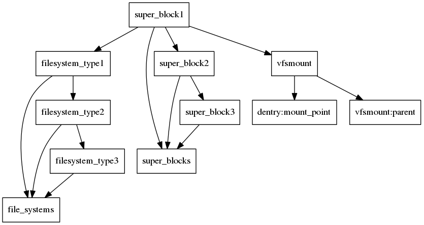
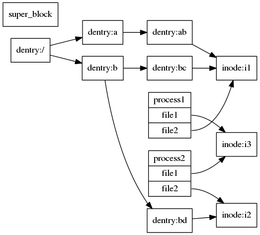

VFS- 内核是如何抽象文件系统的
UNIX 的哲学之一就是一切皆文件，所以可以看出文件系统在操作系统层面是非常重要的，很多基本单元都是通过文件系统展开的，所以了解文件系统有利于分析整个操作系统的脉络。
在 Linux 当中文件系统千奇百种，比较常见的有 EXT3、EXT4，还有基于内存的 ramfs、tmpfs 和基于网络的 nfs，和基于用户态的 fuse，当然 fuse 应该不能完全的文件系统，只能算是一个能把文件系统实现放到用户态的模块，满足了内核文件系统的接口，他们都是文件系统的一种实现。这个 wiki 上列出了很多 Linux 的文件系统类型。
对于这些文件系统，Linux 做了一层抽象就是 VFS 虚拟文件系统，这个其实就是软件设计必然的过程，对于不同的实现规定统一的接口，也就是定义与实现分离，如果想要自己实现一个文件系统的话只要实现一个满足 VFS 层的文件系统就能加入到内核当中。所以其实内核的文件和我们普通理解的文件其实有点不一样，这里的文件更像是一个接口，只不过最初是从磁盘上的文件衍生过来的，最后抽象成了一种可以对接各种功能的接口。
下面就开始剖析 VFS 的主要内容。
VFS 有几个必不可少的元素，filesystem_type，super_block, dentry, inode, file, vfsmount, nameidata 等等。这里抛开具体的代码，先从概念入手，下一篇博文，我会实现一个简单的文件系统，再基于代码分析具体的概念。
首先是 filesystem_type 和 super_block，这两者的关系有点类似于软件中的 class 和 object 的关系。在内核当中有一个全局的file_systems链表串接了所有的文件系统类型的代表filesystem_type，对于文件系统的注册和删除就是在链表当中增加和删除对应的节点。而super_block就是一个文件系统的实例。本身也是通过全局链表串连起来的。filesystem_type本身非常简单，定义了获取和删除super_block的接口，和一些共同的相关信息。
对于super_block来说超级块定义了文件系统的具体信息和对应文件系统的接口，比如write_super,alloc_inode,sync_fs等，这些都是有具体的文件系统实现的。所有的inode都链接到了super_block。
对于文件系统来说挂载点是个很有意思的点，在内核当中挂载点用vfsmount表示，挂载点是文件系统之间的衔接部分，如果要添加一个新的文件系统势必要将文件系统挂载在某个目录下面使得文件系统生效，vfsmount就是这样一个接口。当文件系统挂载以后原目录将不可见。vfsmount的主要内容是vfsmount的拓扑关系以及指向的目录和super_block。所以从宏观的角度来说，整个文件系统的组织是如图这样的。

这是文件系统本身这个结构在操作系统里的组织结构，接下来分析文件系统满足 VFS 要包含哪些内容。
第一个要说的就是 dentry，dentry 表现的是文件在文件系统中的树状关系，dentry 也要实现相应的接口，包括 d_delete，d_release，d_compare等接口。
dentry 代表的是目录结构中的一个文件，而文件其实就是没有子目录的文件。dentry 链接到了超级快和父 dentry 和子 dentry 以及对应的 inode。
接下来是 inode, inode 本身代表的一个文件，保存的信息很多，包括文件的大小，创建时间，文件的块大小等参数，以及文件的读写缓存等信息，还要定义对应的针对文件的函数接口，包括增删改查等等。没有文件名，因为它代表的是文件的原信息，具体的路径的表示依赖dentry。
dentry 和 inode 的关系是多对一的，即多个 dentry 可以指向同一个文件，这和 linux 当中的文件链接有关。
接下来就是 file，file 虽然叫 file 但是对应的却不像 inode 一样，它对应的是一个进程所打开的文件。例如两个不同的进程打开了磁盘上的同一个文件，那么他们对应的 inode 是相同的，这也是 inode 意义。但是不同进程之间的 file 不是同一个引用，file 本身的结构还是和文件操作有关的。
整个关系如图所示。

对应的文件目录如下
1 | . |
图中展示了一个硬链接代表着 bc 和 ab 的 dentry 指向了同一个inode，硬链接是不同 dentry 指向同一个inode，这也是为什么硬链接不能夸文件系统，因为inode是属于特定文件系统的。
图中其实inode是串联在super_block上的，super_block维护了文件系统中`inodes，因为画上去太乱了所以省略了。
VFS 的整体结构就是这样，接下来简要地说几个具体内容：
所谓的打开文件描述符其实就是进程的 files 数组这个文件描述符表的下标，通过对应的 fd 就能找到 file 结构。例如 dentry，vfsmount 这样的结构都有一个 hashtable 来缓存搜索的内容，这样就能加开目录的遍历搜索。
inode 其实也有一个全局的 hashtable 用于快速查找，inode 本身能代表的东西很多，一切皆文件就体现在他身上，他既可以表示一个 socket，也可以表示一个管道，还可以表示块设备、字符设备，然后就是普通文件了。
以上讲的就是整个内核当中 VFS 层的抽象，并没有牵涉到具体的文件系统，在下一篇博客我将会实现一个简单的文件系统，不就具体的代码分析，来熟悉这里提到的这些概念。
其实了解了概念以后，就会给人一种不过如此的感觉，真正值得玩味的是下层的实现，这也是我后面的博客将会介绍的内容。比如基于磁盘的文件系统更多的是要关注 I\O 层的东西。
其实内核的 I\O 路径是这样的：user space -> VFS -> FS -> I\O layer -> I\O scheduler(optional) -> block_driver -> block_device, 一个 I\O 经过了这些才真正到达了对应的存储上。
一个用户态的系统调用先通过 VFS 找到对应的文件系统再向下传递 I\O，这是 I\O 的一般路径。所以说对于用户来说，一切都是操作文件了。